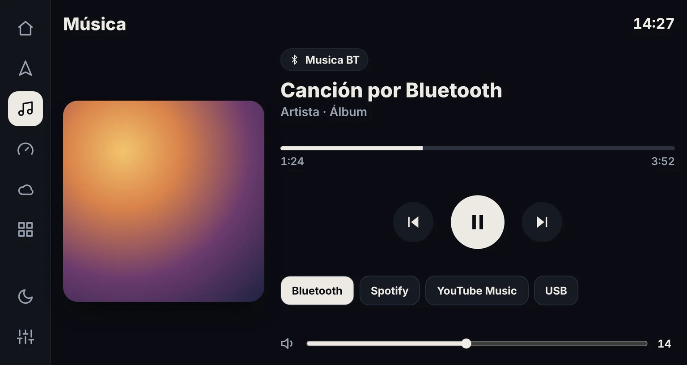
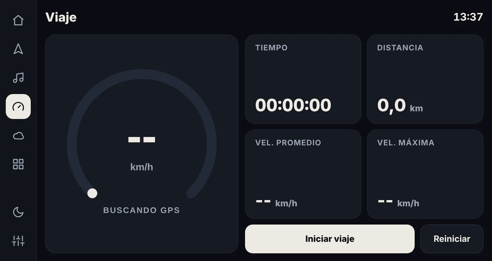
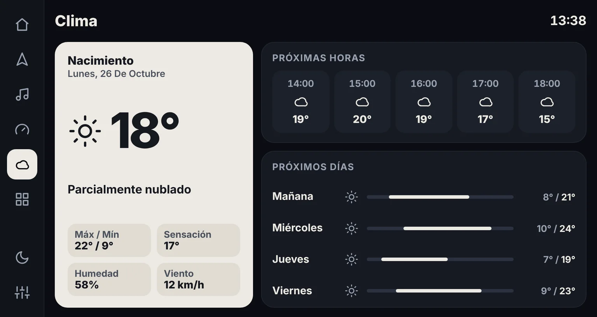
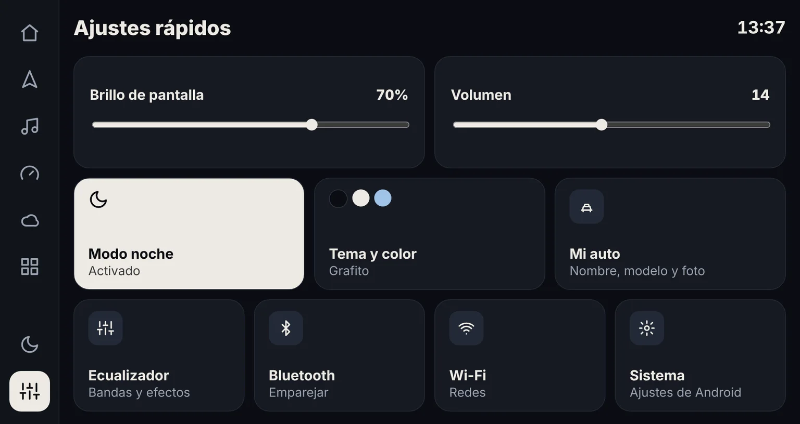
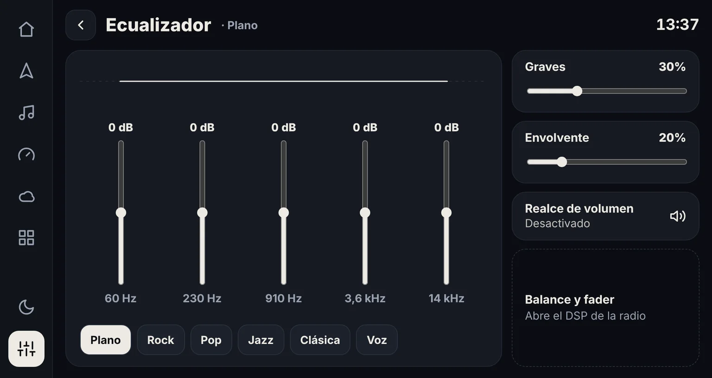
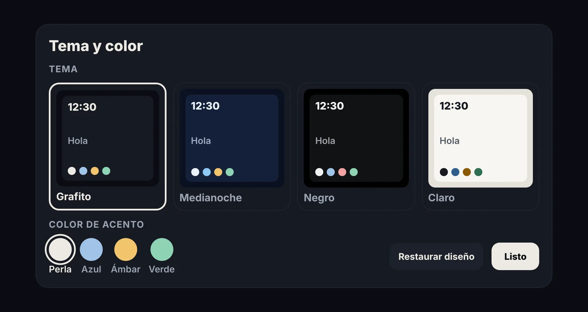

XV Launcher
Un launcher a medida para la radio Android de mi Subaru XV 2012. Reemplaza la pantalla genérica del fabricante por una interfaz pensada para manejar: letras grandes, todo a un toque, música del celular, velocímetro GPS y clima de la ciudad donde estoy.

Lo que necesitaba en el auto, nada más
Música Bluetooth
Muestra la canción, el artista y la carátula del celular conectado, con play, pausa, siguiente y anterior. Funciona también con Spotify o YouTube Music.
Velocímetro GPS
Velocidad en vivo en el inicio y una pantalla de viaje con tiempo, distancia, velocidad promedio y máxima.
Clima por ubicación
Temperatura, pronóstico por horas y días, y el nombre de la ciudad según el GPS. Se reintenta solo si la radio enciende sin internet.
Accesos que se adaptan
Encuentra las apps del fabricante (Teléfono BT, Musica BT, DSP) aunque no estén en el cajón de Android. Cada acceso se cambia con una pulsación larga.
Temas y "Mi auto"
Cuatro temas, colores de acento, modo noche y nombre, modelo, color y foto del auto personalizables.
Ecualizador y reposo
Ecualizador de 5 bandas con presets y un modo reposo que muestra solo la hora tras 5 minutos sin uso.
Diseñadas para el área real de la radio
La pantalla es de 1024 × 600, pero la barra del sistema ocupa una franja. Todo se diseñó a 1024 × 544 puntos y la app escala la densidad para llenar exactamente el espacio útil, con textos de al menos 16 pt para leer de reojo.






El problema difícil: la música Bluetooth
La radio no usa el Bluetooth de Android, sino un módulo propio. Su app "Musica BT" no publica
la canción por MediaSession, no acepta teclas multimedia y no emite avisos. Para
Android, no estaba sonando nada. Así lo resolví:
Diagnóstico dentro del auto
Agregué al launcher una ventana de diagnóstico que listaba sesiones multimedia, notificaciones, avisos recibidos y receptores de botones. Con fotos de esa pantalla confirmé que ninguna vía estándar entregaba datos.
Extraer el código del sistema
Las apps del fabricante vienen pre-optimizadas: el APK no trae classes.dex. Agregué un exportador que copia el APK y sus archivos .odex/.vdex a un pendrive mediante el Storage Access Framework (la radio tiene Android 8.1 y solo la app Documentos).
Leer cómo funciona
Con vdexExtractor recuperé el bytecode y con jadx lo descompilé. El servicio BluetoothService exporta una interfaz IMusicCallback para que otras apps reciban la canción y controlen la reproducción, sin exigir permisos.
Cliente Binder escrito a mano
En vez de copiar archivos AIDL, implementé el protocolo directo con Parcel y transact: registro un Binder propio como listener y paso los avisos al hilo principal.
Carátula por internet
El Bluetooth de la radio solo entrega título, artista y álbum. La carátula se busca en el catálogo público de iTunes y queda en una caché LRU.
// Registro del listener en el servicio Bluetooth de la radio (sin AIDL)
private fun call(code: Int, write: (Parcel) -> Unit = {}): Boolean {
val b = remote ?: return false
val data = Parcel.obtain(); val reply = Parcel.obtain()
return try {
data.writeInterfaceToken("cn.yunovo.nxos.nxbt.IMusicCallback")
write(data)
b.transact(code, data, reply, 0)
reply.readException(); true
} finally { data.recycle(); reply.recycle() }
}
call(T_ADD_LISTENER) { it.writeStrongBinder(listener) }Otros desafíos
- Apps ocultas del fabricante: Radio, DSP o Musica BT no tienen la categoría
LAUNCHER. Se listan conMATCH_ALLy, en el caso de Musica BT, con la acción propia del sistema que abre esa sección. - Una sola fuente de verdad para la música: el repositorio elige entre MediaSession, el servicio del fabricante, notificaciones o avisos del sistema según cuál esté sonando.
- GPS compartido: conteo de pantallas que lo usan para encenderlo solo en Inicio o Viaje, sin cortarlo al pasar de una a otra.
- Clima y ciudad: Open-Meteo, con
Geocodery un respaldo de geocodificación inversa; solo vuelve a consultar al moverse más de 3 km.